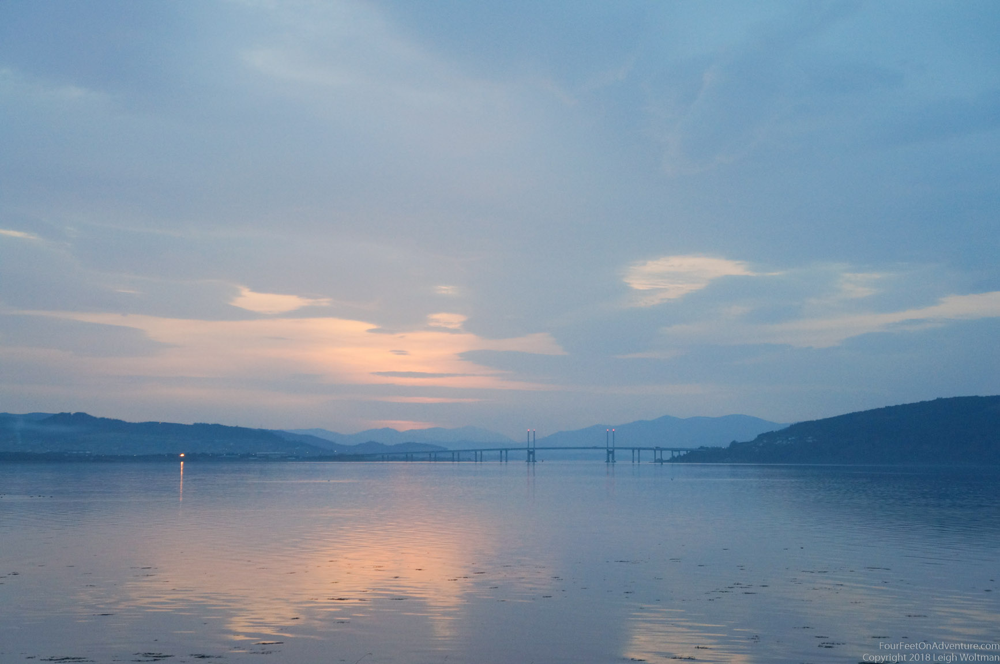
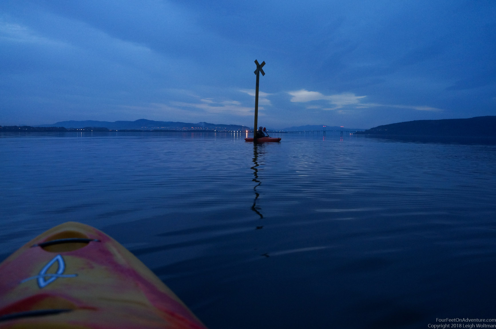

Did I mention we are the luckiest people in the world to be living at an amazing spot, about 100 meter away from the ocean, with a great view over the Moray Firth and the bridge to the Black Isle. So we do before and after work paddles on the ocean. Nothing is more relaxing than to be on the water in the twilight, with the sounds of birds around you, a splashing otter (true story), bottlenose dolphins (also a true story, we’ve seen them jumping), and porpoises (yes, also true).

But, sometimes there are these 2 very strange creatures. They are bright coloured, and they hold paddles. Ah, yes, that’s us! We feel like we are part of the dynamics of the firth sometimes, and going out there in a boat never fails to clear the minds and relax. Well, unless there is a massive storm going on, but in that case we stay on the couch typing blogs :).
